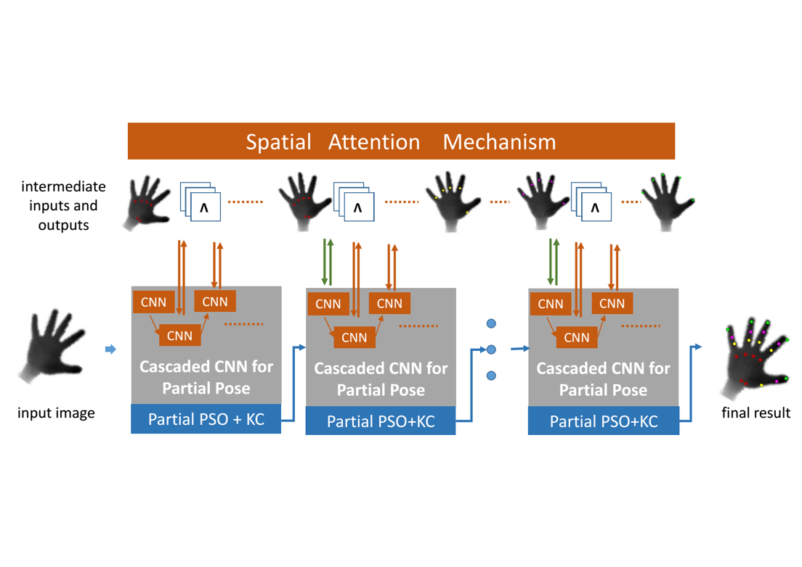
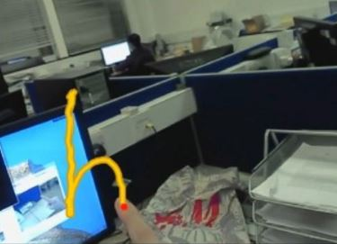
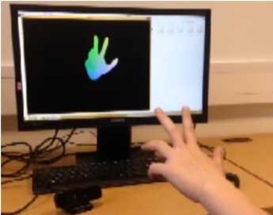
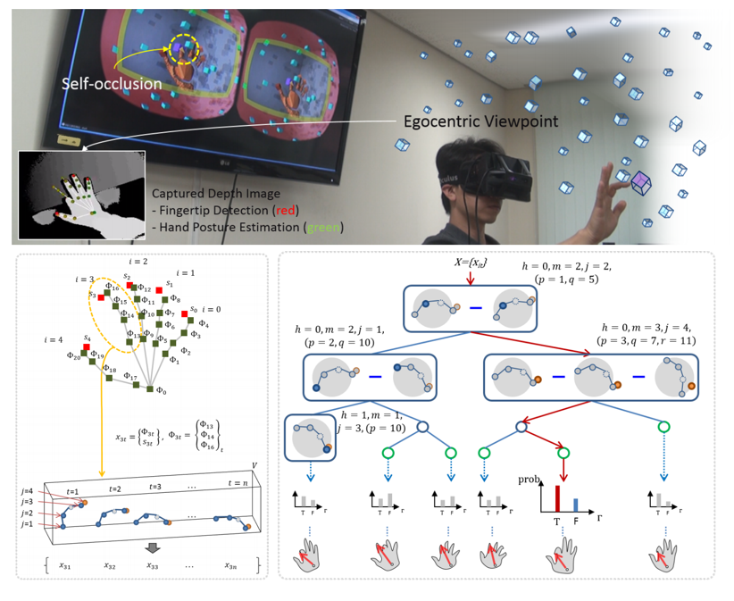
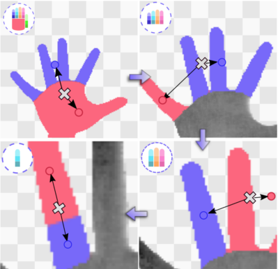
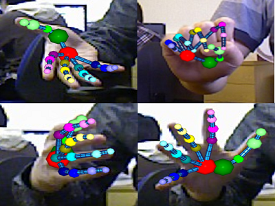

| S. Yuan, Q. Ye, B. Stenger, S. Jain, T-K. Kim Big Hand 2.2M Benchmark: Hand Pose Data Set and State of the Art Analysis,Proc. of IEEE Conf. on Computer Vision and Pattern Recognition, (CVPR), Honolulu, Hawaii, USA, 2017. Download: PDF |
|  | Q. Ye*, S. Yuan*, T-K. Kim Spatial Attention Deep Net with Partial PSO for Hierarchical Hybrid Hand Pose Estimation,Proc. of European Conf. on Computer Vision (ECCV), Amsterdam, Netherlands, 2016. (*indicates equal contribution). Download: PDF |
|  | Hyung Jin Chang, Guillermo Garcia-Hernando, Danhang Tang, Tae-Kyun Kim Spatio-Temporal Hough Forest for Efficient Detection-Localisation-Recognition of Fingerwriting in Egocentric Camera, Computer Vision and Image Understanding (CVIU) 2016. Download: PDF |
|  | Danhang Tang, Jonathan Taylor, Pushmeet Kohli, Çem Keskin, T-K. Kim, Jamie Shotton Opening the Black Box: Hierarchical Sampling Optimization for Estimating Human Hand Pose, Proc. of IEEE Int. Conf. on Computer Vision (ICCV), Santiago, Chile, 2015 (oral, acceptance rate=3.3%). Download: PDF [Supplementary] [Demo on YouTube] |
|  | Y. Jang, S. Noh, H. Chang, T-K. Kim, W. Woo 3D Finger CAPE: Clicking Action and Position Estimation under Self-Occlusions in Egocentric Viewpoint, Proc. of IEEE Virtual Reality (VR), Arles, France, 2015 (full paper, accept rate=13.8% (13/94)), also in IEEE Trans. on Visualization and Computer Graphics, 21(4):501-510, Apr 2015. Download: pdf [Project page] |
|  | D. Tang, H.J. Chang*, A. Tejani*, T-K. Kim Latent Regression Forest: Structured Estimation of 3D Hand Posture, Proc. of IEEE Conf. on Computer Vision and Pattern Recognition (CVPR), Columbus, Ohio, USA, 2014 (oral, accept rate=5.75%). *indicates equal contribution. Download: PDF [ 960 KB] [Demo on YouTube video] [Project page] |
|  | D. Tang, T.H. Yu and T-K. Kim Real-time Articulated Hand Pose Estimation using Semi-supervised Transductive Regression Forests, Proc. of IEEE Int. Conf. on Computer Vision (ICCV), Sydney, Australia, 2013 (oral, accept rate=2.7%). Download: PDF [ 1,465 KB] [Demo on YouTube video] [Slides] |
| Download: New Annotation | Training / Testing |
| Download: | Training / Testing / Our results |
| Label description: |
|
Many thanks to Guillermo Garcia for help with publishing this dataset.
Many thanks to Danhang Tang, Shanxin Yuan, and Qi Ye for help with reannotating this dataset.